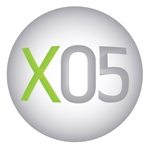
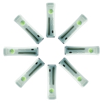

- Front Page
- Joytech Xbox 360 Accessories
-
Joytech's licensed product range for the Xbox 360 includes the Neo Se Controller, the Nitro Racing Wheel and the Control Center. Other products are the Se Headset Communicator, the Digital AV Cable, and the Digital VGA Cable. CESPage.com Xbox have added details of them to the hardware section, the first third party items for this section - but not the last!
Related Links
Hardware
Joytech Xbox 360 NEO Se Advanced Controller
Joytech Xbox 360 Nitro Racing Wheel
Joytech Xbox 360 SE Communicator Headset
Joytech Xbox 360 Digital AV Cable (Scart)
Joytech Xbox 360 Digital VGA Cable
Joytech Xbox 360 Control CenterSource: Joytech | Date: 23rd October 2005
- Hex 168: The Beginning is Nigh
-
 Xbox 360 competition in North America for 360 people to win the console, three game titles and one year membership to Xbox Live and a trip to an Xbox Event
Xbox 360 competition in North America for 360 people to win the console, three game titles and one year membership to Xbox Live and a trip to an Xbox Event
Related Links
Articles
Hex 168: The Beginning is NighSource: CESPage.com Xbox | Date: 19th October 2005
- Xbox Live Arcade
-
Microsoft at Digital Life announced the support and launch window titles for Xbox Live Arcade on the Xbox 360 the online source for
casual gaming on the new console, with titles such as Hexic HD which is included for free on the Xbox 360 Hard Drive and Geometry Wars 2
featured in the game Project Gotham Racing 3.
Related Links
Articles
Xbox Live ArcadeSource: CESPage.com Xbox | Date: 17th October 2005
- Xbox 360 Games and Hardware
-
Also more information and screenshots for Xbox 360 Hardware and Games were also announced at X05, so some of the existing
sections on these Games and Hardware have been updated. This also includes more Xbox 360 wallpaper bringing the total to 20!
Related Links
Games
Gears of War
Tom Clancy's Ghost Recon Advanced Warfighter
Kameo
The Elder Scrolls IV : Oblivion
Perfect Dark Zero
Project Gotham Racing 3
Hardware
Xbox 360 Console
Xbox 360 ControllerSource: CESPage.com Xbox | Date: 9th October 2005
- X05: Xbox and Xbox 360 Titles
-
 CESPage.com have added information on the Games section for over 30 titles for Xbox and Xbox 360 announced at X05 in Amsterdam. You can find a list of all the titles that have been added below. Also some of the other Games title sections have been updated too!
Related Links
Games
Alone in the Dark
Amped 3
Blazing Angels: Squadrons of WWII
Call of Duty 2
Crackdown
Dead Rising
Football Manager 2006
Frame City Killer
GUN
Half Life 2
The Incredibles: Rise of the Underminer
Madden NFL 06
Mass Effect
Moto GP 2006
NBA 2K6
NBA Live 06
NHL 2K6
Quake 4
Ridge Racer 6
Saint's Row
Shadow the Hedgehog
Shrek Superslam
The Sims 2
SSX On Tour
Test Drive Unlimited
TimeShift
Tony Hawk's American Wasteland
True Crime: New York City
Ultimate Spiderman
X-men Legends II: Rise of ApocalypseSource: CESPage.com Xbox | Date: 6th October 2005
- X05
-
This week is the X05 event being held in Amsterdam in the Netherlands, with some great announcements concerning Xbox and Xbox 360 titles.
Including details of some exclusive Xbox 360 titles and multi-platform games coming to the console and more, plus we will be bringing more details to the Games section in the coming weeks also!
Related Links
Articles
The Countdown for Xbox 360 Begins at X05
Xbox 360 Launch Lineup AnnouncedSource: CESPage.com Xbox | Date: 5th October 2005
- Desktop Wallpaper
-
You can find Desktop Wallpaper for your computer with designs from Xbox and Xbox 360 games and hardware. All wallpapers are available in multiple sizes of 800x600, 1024x768, 1152x864, 1280x960 and 1600x1200. You can find all the Games and Hardware features with Wallpaper here.
Related Links
Amped 2
Brute Force
Crimson Skies
Dead or Alive 4
Dead or Alive Xtreme Beach Volleyball
Halo
Halo 2
Halo 2 Multiplayer Map Pack
Hitman: Contracts
Kameo
Pariah
Project Gotham Racing 2
Project Gotham Racing 3
Splinter Cell Pandora Tommorow
The Chronicles of Riddick: Escape from Butcher Bay
Xbox 360 Console
Xbox 360 Wireless ControllerSource: CESPage.com Xbox | Date: 2nd October 2005
- Xbox 360 Cables and Accessories
-
Some of the items in the Hardware section such as Cables and Accessories have been updated with improved quality images of the actual item,
plus for the Headset and Play & Charge Kit there are two angled images for these products.
Related Links
Hardware
Xbox 360 Headset
Xbox 360 HD Video AV Cable
Xbox 360 S-Video AV Cable
Xbox 360 VGA Video Cable
Xbox 360 Play & Charge KitSource: CESPage.com Xbox | Date: 2nd October 2005
- Origen Xbox 360 Website Mystery Revealed
-
For over five weeks this mysterious website has been counting down, but counting down to what - today the countdown is over and all has been revealed!
Related Links
Articles
Origen Xbox 360 Website Mystery RevealedSource: CESPage.com Xbox | Date: 27th September 2005
- Xbox 360 Hardware
-
The Hardware section section has been updated with new images of the hardware including actual images of the Xbox 360 Universal Media Remote
and Memory Unit. Plus more images of the faceplate available for the console and more.
Related Links
Hardware
Xbox 360 Wireless Controller
Xbox 360 Controller
Xbox 360 Universal Media Remote
Xbox 360 Faceplates
Xbox 360 Memory UnitSource: CESPage.com Xbox | Date: 25th September 2005
- Xbox Games
-
The Games section has been updated with a couple more games - Dead or Alive Ultimate and Forza Motorsport, as new games come out we hope to add this too, so don't worry Xbox content will still be added. Plus the Jade Empire page has been updated with some more concept art.
Related Links
Games
Dead or Alive Ultimate
Forza Motorsport
Jade EmpireSource: CESPage.com Xbox | Date: 25th September 2005
- Tokyo Game Show 2005
-
With the announcement of the release dates and launch window titles at the Tokyo Game Show, more screenshots for Dead or Alive 4, Tom Clancy's Ghost Recon 3 and Project Gotham Racing 3. Also a wallpaper for Project Gotham Racing 3 has been added, plus the release dates are in the Xbox 360 Console also.
Related Links
Games
Dead or Alive 4
Tom Clancy's Ghost Recon 3
Project Gotham Racing 3
Hardware
Xbox 360 ConsoleSource: CESPage.com Xbox | Date: 18th September 2005
- Xbox 360 Launch Dates Announced!
-
Microsoft today announced that Xbox 360 will arrive on:
Tuesday, Nov. 22 in North America
Friday, Dec. 2 in Europe
Saturday, Dec. 10 in Japan
Update
Also an article containing the press release information for the launch information has also been added!
Related Links
Articles
Xbox 360 Launch Dates Announced!Source: Microsoft Presspass | Date: 15th September 2005
- Xbox 360 Xbox Live
-
Xbox Live Offers New Levels, Features and Premium Retail Packs to Supercharge Online Gaming Experiences on Xbox 360
Related Links
Articles
Xbox 360 Xbox LiveSource: CESPage.com Xbox | Date: 9th September 2005
- Xbox 360 Brochure
-
We have added some information from the Xbox 360 Guide Brochure including comparison charts for the packages and for Xbox Live and more!
Related Links
Articles
Xbox 360 BrochureSource: CESPage.com Xbox | Date: 29th August 2005
- Xbox 360 Accessories
-
We have updated the Hardware section with some details about the Xbox 360 Accessories including the Audio / Video Cables and items available for the console.
Also all main Xbox 360 items sections have been updated with Pricing and Pre-order links. Plus we have added two more wallpapers for the Xbox 360 featuring the box images for the Xbox 360 System and Xbox 360 Core.
Related Links
Hardware
Xbox 360 Console
Xbox 360 Controller
Xbox 360 HD Video AV Cable
Xbox 360 S-Video AV Cable
Xbox 360 VGA Video Cable
Xbox 360 Faceplates
Xbox 360 Play & Charge Kit
Xbox 360 Hard Drive (20GB)Source: CESPage.com Xbox | Date: 28th August 2005
- Xbox 360 Wallpaper
-
 Check out the new wallpapers added for the Xbox 360 Console including box shot compositions and box shot style wallpapers!
There are white and grey style images of the consoles, plus wallpapers in the style of Xbox 360 System and Xbox 360 Core Boxes!
Related Links
Hardware
Xbox 360 ConsoleSource: CESPage.com Xbox | Date: 23rd August 2005
- Xbox 360 J Allard Chat
-
Sunday the 21st had a chat with J Allard, General Manager - Xbox Platform, Microsoft Corporation. This was regarding the Xbox 360, a transcript
of the chat can be found in the Articles section, also some of the main questions have been integrated into the Xbox 360 section of the FAQ.
Related Links
Articles
Xbox 360 J Allard Chat
FAQSource: CESPage.com Xbox | Date: 22nd August 2005
- Xbox 360 Packages
-
We have put some of the Xbox 360 Price and Package information into the Xbox 360 section including the contents in each package and more,
plus exclusive generate box shots and composite shows also! There is a lot of information regaring the Xbox 360 we hope to bring it to
you so you can make a informed choice or just for some details!
Related Links
Hardware
Xbox 360 ConsoleSource: CESPage.com Xbox | Date: 21st August 2005
- Xbox 360 Details Article
-
Added an article based on the Xbox 360 Marketing materials on the Xbox 360, a great reference for both types of console,
including details of the accessories and more.
Related Links
Articles
Xbox 360 DetailsSource: CESPage.com Xbox | Date: 20th August 2005
- Xbox 360 FAQ Update
-
The FAQ has been updated on CESPage.com Xbox with details about the Xbox 360 from the recent GC 2005 including details of the
two package types the Xbox 360 Package and Xbox 360 Core.
There is a lot of information and rumour currently, so some of the questions that have been asked may be answered there.
Related Links
FAQSource: CESPage.com Xbox | Date: 20th August 2005
- Xbox 360 Details
-
We have now added some pricing and pre-order details for the Xbox 360 console and the two packages available - including images,
and also updated the FAQ for some details and questions from the GC 2005 in Leipzig (Leipzig FAQ). Also included in the Xbox 360
section are some exclusive composite images of the package boxes and contents.
Related Links
Hardware
Xbox 360 Console
FAQSource: CESPage.com Xbox | Date: 19th August 2005
- Xbox 360 Hardware
-
We have updated the Hardware section, added specifications to the Xbox 360 Console section, plus information and images for the
Xbox 360 Media remote, Xbox 360 Wireless Networking Adapter and the 20GB Xbox 360 Hard Drive.
Related Links
Hardware
Xbox 360 Console
Xbox 360 Media Remote
Xbox 360 Wireless Networking Adapter
Xbox 360 Hard Drive (20GB)Source: CESPage.com Xbox | Date: 18th August 2005
- GC 2005 Xbox 360 Announcement
-
The Xbox 360 will be released in two main packages the main Xbox 360 Package will be around $399.99 (US) / €399.99 / £279.99 and contains the console, Xbox 360 Hard Drive (20 GB), Xbox 360 Wireless Controller, Xbox 360 Faceplate, Xbox 360 Headset, Xbox 360 Component HD-AV Cable, Xbox Live Silver membership and for a limited period a bonus Media Remote.
The second package will be around $299.99 (US) / €299.99 / £209.99 and contains the console, Xbox 360 Controller, Xbox 360 Faceplate and Xbox 360 Standard AV Cable.
Accessories that will be available for the Xbox 360 include:- Xbox 360 Hard Drive (20 GB) for around $99.99 (US) / €99.99 / £69.99
- Xbox 360 Memory Unit (64 MB). for around $39.99 (US) / €34.99 / £22.99
- Xbox 360 Wireless Controller for around $49.99 (US) / €44.99 / £32.99
- Xbox 360 Play & Charge Kit for around $19.99 (US) / €19.99 / £14.99
- Xbox 360 rechargeable battery pack for around $11.99 (US) / €14.99 / £9.99
- Xbox 360 Wireless Networking Adapter for around $99.99 (US) / €79.99 / £59.99
- Xbox 360 Headset for around $19.99 for around (US) / €19.99 / £14.99
- Xbox 360 Universal Media Remote for around $29.99 (US) / €29.99 / £19.99
- Xbox 360 S-Video AV Cable (U.S. only) Xbox 360 SCART AV Cable for around $29.99 (US) / €24.99/ £17.99
- Xbox 360 VGA HD AV Cable for around $39.99 (US) / €29.99 / £19.99
Update
CESPage.com Xbox has been updated with a full article containing all the information from the official Press Release regarding the Xbox 360 pricing.
Related Links
Articles
Xbox 360 Price AnnouncementSource: MajorNelson.com | Date: 17th August 2005
- Xbox 360 Factsheets
-
We have added Articles for all the Official information about the Xbox 360 in each of the Fact sheets is details released by Microsoft
regarding the Xbox 360, hopefully this should help to dispel some rumours as well as provide some useful information.
Related Links
Articles
Xbox 360 Factsheet
Xbox 360 Peripherals Factsheet
Xbox 360 Online FactsheetSource: CESPage.com Xbox | Date: 10th August 2005
- FAQ updated for Xbox 360
-
The FAQ has been updated on CESPage.com Xbox with details about the Xbox 360, this information has been obtained from Microsoft
Fact sheets, official announcements and retail information on the new console.
Related Links
FAQ
Source: CESPage.com Xbox | Date: 29th July 2005
- Xbox Live 24/7 from Game
-
Xbox Live 24/7 is 24 Hours of bargains from Game on 24/07/2005, pick up a great bargain and remember to be quick as when it's gone it's gone!
Update
Xbox Live 24/4 had some great bargains, CESPage.com Xbox managed to pick up the Logitech Steering Wheel, most items went within 2 minutes, so some pretty fast buying, hopefully next year will offer some more great deals!Source: Game | Date: 22nd July 2005
- Wallpapers
-
Check out the Hardware and Games sections for some great wallpapers with some exclusive Xbox 360 wallpaper and more!
Related Links
Games
Dead or Alive 4
Halo 2 Multiplayer Map Pack
Hardware
Xbox 360 Console
Xbox 360 Wireless ControllerSource: CESPage.com Xbox | Date: 23rd June 2005
- Xbox 360 Peripherals Updated
-
Take a look at the Hardware section with larger images of some of the peripherals available for Xbox 360.
Also the whole website has been updated to a new, faster loading website to improve the experience fo reading up on Xbox and Xbox 360 information.
Source: CESPage.com Xbox | Date: 9th June 2005
- Xbox 360 Peripherals
-
Take a look at the Hardware section with some information about peripherals for the Xbox 360 including the Xbox Live Camera,
Universal Media Remote and more. Also check out the Wallpapers in the Xbox 360 Console section!
Source: CESPage.com Xbox | Date: 2nd June 2005
- End of E3 2005
-
 E3 2005 is coming to an end, but it has been a great year for Xbox including the annoucement of Xbox 360,
information on most of the new Xbox 360 games can be found in the Games section.
Many Xbox games were announced also and we have added some content for those also.
E3 2005 is coming to an end, but it has been a great year for Xbox including the annoucement of Xbox 360,
information on most of the new Xbox 360 games can be found in the Games section.
Many Xbox games were announced also and we have added some content for those also.
Source: CESPage.com Xbox | Date: 20th May 2005
- E3 2005
-
E3 2005 is on at the moment, we have added some content for some new titles including Perfect Dark Zero for Xbox 360 and the
Halo 2 Multiplayer Mappack for Xbox, see the Games section for more details and a new look!
We will also add more information and titles for the Xbox 360 so keep visiting.
Related Links
Games
Dead or Alive 4
Kameo (Xbox 360)
Perfect Dark Zero
Xbox 360 Guide
Hardware
Xbox 360 Console
Xbox 360 Wireless ControllerSource: CESPage.com Xbox | Date: 18th May 2005
- Xbox 360
-
MTV hosted the announcment of the Xbox 360 on 12/13th May 2005, we have added some content to the website for this visit the Articles for
some articles one produced before, and another after - this one has the offical information direct from Microsoft! Also the Hardware
section has details of the Console and Wireless Controller also.
Source: CESPage.com Xbox | Date: 13th May 2005
- Halo 2 Demo
-
Visit the Articles section with articles about Halo 2 including information about the Halo 2 demo at Gamestars Live in London where we got a chance to play it.
Related Links
Articles
Halo 2 DemoSource: CESPage.com Xbox | Date: 5th September 2004
- Halo 2 Content
-
As the release of Halo 2 gets closer 11th November for the UK or 9th for the US, there is even more content to add in the future but for now there are more screenshots and also wallpaper to view and download.
Related Links
Games
Halo 2Source: CESPage.com Xbox | Date: 17th August 2004
- Microsite Enhancement
-
 CESPage.com Xbox is adding even more content to the microsites in the Games
section including exclusive wallpapers, even more screenshots and concept art plus more.
CESPage.com Xbox is adding even more content to the microsites in the Games
section including exclusive wallpapers, even more screenshots and concept art plus more.
Source: CESPage.com Xbox | Date: 15th August 2004
- Microsites
-
Always adding more content there are even more microsites for Games available on Xbox including Dead or Alive 3 &
Xtreme Volleyball, Rainbow Six 3 and the new game The Chronicles of Riddick: Escape from Butcher Bay. Always keep checking back as new ones are added
or existing ones expanded.
Source: CESPage.com Xbox | Date: 18th July 2004
- Microsites from CESPage.com Xbox
-
Get the latest information about games from the Games section including information about Halo 2, Project Gotham Racing 2 and also older games like Blinx, Amped and more.
Source: CESPage.com Xbox | Date: 11th July 2004
- Purchase from CESPage.com Xbox
-
You can now purchase the Games and Hardware items in the Resources section of this website from Amazon.co.uk with great products and prices plus you can also purchase other things such as books and more!
Source: CESPage.com Xbox | Date: 4th July 2004
- CESPage.com Xbox Launched!
-
CESPage.com Xbox has now been launched offering Resources such as Game and Hardware information, Help such as Tutorials and Tips plus a lot more!
Source: CESPage.com Xbox | Date: 27th June 2004